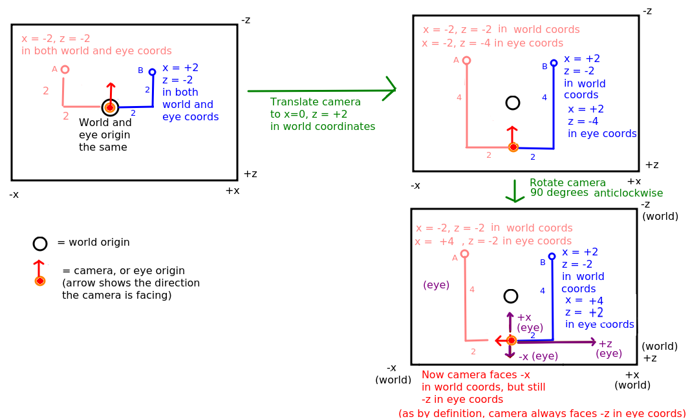

The key to developing immersive applications on the web is rendering 3D graphics (such as shapes and 3D models) in the browser. To develop 3D applications you use a 3D graphics library. There are two commonly used 3D graphics libraries:
As mentioned above, OpenGL is also available for the web in the form of WebGL. In 2009, with increasing interest in full-featured, "desktop-like" web applications, WebGL arrived and allowed development of 3D graphical applications in the web browser using JavaScript. It has been supported in Firefox, for instance, since version 4.
WebGL makes use of a form of OpenGL known as OpenGL ES. OpenGL ES is optimised for devices with limited resources, such as mobile devices (although these days many mobile devices have capabilities comparable with traditional desktop machines!) OpenGL ES programming is slightly different to standard OpenGL: it is somewhat more complex but more efficient. OpenGL ES is also used on Android.
WebGL, however, is a very low-level programming API, and producing even code to show one single 2D triangle on the screen (never mind a 3D shape) is rather complex. For this reason, other, higher-level libraries are typically used when doing 3D development for the web;
Having examined the background behind web 3D graphics, we will now look at some of the fundamental principles of OpenGL development, specifically the coordinate system. Because OpenGL is a 3D graphics API, all shapes we draw need to be specified with three coordinates: x, y and z. In the default OpenGL view, x represents the horizontal axis, y represents the vertical axis and z represents the depth axis:
The coordinate system referred to above, with the origin at the centre of the screen, is known as the eye coordinate system because the coordinates are with respect to the user's current view of the world. However, if we are developing a game or an augmented-reality application, we want to give our objects (e.g. game characters, augmented reality content such as Pokemon or points of interest) absolute coordinates within our 3D world. These will not be with respect to the user's current view of the scene, but with respect to the world as a whole, where the world origin might be some specific geographical point, such as the equator or the central room in a game. These objects will be either visible or invisible to the user, depending on where exactly the user is within the world and what direction they are facing. Because we want to place these objects at specific positions within the world, we give them world coordinates - absolute coordinates within the world.
However, the eye coordinates of each object, with respect to the centre of the screen, might be different to the world coordinates. Imagine the origin of the 3D world is the central room in a 3D game. We might not be at that position in the world, we might be in a completely different room, and furthermore, we might not be looking down the negative z-axis as in the default view. We might be looking in a direction aligned at 45 degrees to both the x and z axes. Additionally, we might be on a slope, in which case, the up direction does not correspond to the y axis.
The eye coordinate (0,0,0) is always the centre point of the viewport (screen), even if this is not the origin within our world.
In many 3D applications, we want to allow the user to navigate through a 3D world. Examples might be the player in a game, or a user navigating the real world in an augmented-reality app. In this case, we define the objects making up the world (which might include 3D buildings, terrain, points of interest, etc) in our code as world coordinates. We then define a camera, which represents the user's position in the world and the direction in which they are facing. Such a camera would have a set of world coordinates defining its position within the world, as well as a rotation. Such a camera, representing the user's position, is known as a first-person camera; other types of camera also exist which present a view of the world from the perspective of something other than the user (e.g. from the perspective of a certain room in a game, or a non-player character).
The world coordinates of the camera would vary, as the camera moves round the world. However, because a first-person camera represents the user's position, its eye coordinates will always be x=0, y=0, z=0.
As seen above, the camera has a position and rotation. In more detail, it has:

We are going to examine how the eye coordinates of points A and B change as we move the camera.

It's important to not get confused by the terminology here. The first-person OpenGL camera is not the same as the actual hardware camera used to take pictures on the device. When we move onto AR, we will use the term "hardware camera" to distinguish the physical camera from the OpenGL camera.
Many of you will have come across matrices in the past, either at school/college or in the first year Mathematical Structures in Computing module. Matrices are two-dimensional arrays of numbers which are most commonly used to represent geometric transformations which can be applied to shapes (both 2D and 3D), such as rotation, translation, magnification, stretch and shear. There are also other, more specialised, applications of matrices in science and maths - but these are out of the scope of this module. We will not go into the maths of matrices in great detail, and you will not need to create or multiply matrices yourself (WebGL and three.js take care of this for you) but you need to be aware that a matrix represents a geometric transformation of some kind, such as translation or rotation. You also need to be aware of various matrices which exist within OpenGL which are involved in the rendering process.
If you want to read more on matrices, see here.
OpenGL defines a matrix which specifies the transformation between the world coordinates and the eye coordinates. This is called the view matrix. Every time you do a translation or rotation in code, the view matrix is multiplied by the matrix which defines that rotation/translation. Then finally the coordinates specified in code (the world coordinates) are multiplied by the view matrix to give the coordinates with respect to the user's current view.
The other type of matrix which is used in OpenGL is the projection matrix. This transforms the coordinates of shapes to add a sense of perspective, in other words it makes nearby shapes appear larger and further-away shapes appear smaller. So, shapes with eye z coordinates close to 0 (e.g. -1, -2) will appear relatively large, whereas shapes with negative z coordinates further from 0 (-10, -20, etc) will appear smaller. Without the projection matrix, no perspective is applied and shapes would appear the same size irrespective of their eye z coordinate.
We are now going to begin some basic 3D programming with three.js. As we saw above, three.js is a higher-level library which wraps WebGL, making development easier.
three.js consists of various key objects, which are described below.
scene. The scene represents the 3D scene as a whole.camera. As we have seen, the camera represents our current position and orientation within the 3D world.renderer. The renderer is responsible for rendering (drawing) the scene to a particular HTML element, typically a canvas.When drawing our 3D objects, we define a series of meshes. A mesh is a 3D object within our world and consists of:
geometry describing its geometrical shape, and material describing the properties of its surface (for example colour, texture, light reflectance and so on).There are also additional objects we can use in three.js, such as lights: light sources in our world. lights consist of ambient lights (general background lighting) and directional lights (lights placed at a particular position within our world and shining in a particular direction) amongst others. A directional light could be used to simulate the sun, for example.
The site threejsfundamentais.org is a very good tutorial site for three.js, covering everything from the absolute basics to advanced topics such as AR. Indeed, many of the techniques in this tutorial have been used as a basis for the techniques shown in this week's notes. Furthermore, it comes with interactive tutorials in which you can change the code live in the browser and see the result. In addition, the website contains full API documentation, plus examples.
Here is a basic example of three.js. It simply sets up a scene, it doesn't draw anything yet. We will start with this HTML:
<!DOCTYPE html>
<html>
<head>
<title>three.js basic example</title>
<!-- Load the three.js library -->
<script type='text/javascript' src='three.js'></script>
<!-- Load your own JavaScript code (shown below) -->
<script type='module' src='index.js'></script>
</head>
<body>
<!-- By default, canvas is 300x150 so we could omit the width and height -->
<canvas id='canvas1' width='300' height='150'></canvas>
</body>
</html>
You should download three.js from here and save it into the folder where you will create your code.
Note how the HTML page contains a <canvas>. The three.js scene will appear
here.
Moving onto the JavaScript (index.js):
const canvas = document.getElementById('canvas1');
const camera = new THREE.PerspectiveCamera(40, 2, 0.1, 10000);
const renderer = new THREE.WebGLRenderer({canvas: canvas});
const scene = new THREE.Scene();
requestAnimationFrame(renderScene);
function renderScene() {
renderer.render(scene, camera);
requestAnimationFrame(renderScene);
}
Note how we create a camera object, a renderer object, and then a scene
object. The camera is a THREE.PerspectiveCamera; why do we need this?
When creating a scene, we need to account for perspective in order to make nearby objects look larger than further away objects. This is not done by default in WebGL so we have to create a camera which will apply perspective effects. As seen above, this sets up the projection matrix - you may be glad to know that by using three.js we avoid the complex maths necessary to setup the projection matrix! An example is in our code above, as our camera is a THREE.PerspectiveCamera. What do its arguments represent?
The near and far clip planes define the nearest and furthest distances that objects can be seen on the screen; here, images closer than 0.1 units or further than 10000 units away will be invisible. The four arguments above define a shape, resembling a sawn-off pyramid, known as the viewing frustum, shown in this diagram.

Next we create our THREE.WebGLRenderer. Note how we create a renderer and associate it with a particular canvas element in our HTML, in this example an element with the ID of canvas1.Having created a renderer we then create our scene.
Note how we handle scene rendering. We need to tell three.js to render
the scene each time the display refreshes. We write a function renderScene() to do the rendering and schedule it using the JavaScript function
requestAnimationFrame() (not part of three.js, but a standard browser API
function). requestAnimationFrame() schedules a function to run before the next browser repaint (Mozilla). The idea is we render the scene as often as possible so that if the positions of the camera or the objects change, the scene will update.
In renderScene() we call the three.js renderer's render() method to render the given scene using the given camera. Then, once we've drawn the scene, we request it to be drawn again with another call to requestAnimationFrame(). Note that requestAnimationFrame() is rather like setTimeout() but has smoother animation as it matches the display refresh rate. It's also a bit like A-Frame's tick() but must be re-called on each rendering, it will not automatically be called repeatedly.
The next example creates a 3D box:
const canvas = document.getElementById('canvas1');
const camera = new THREE.PerspectiveCamera(80, 2, 0.1, 10000);
const renderer = new THREE.WebGLRenderer({canvas: canvas});
const scene = new THREE.Scene();
const geom = new THREE.BoxGeometry(2,2,2);
const material = new THREE.MeshBasicMaterial({color: 0xff0000});
const mesh = new THREE.Mesh(geom, material);
mesh.position.z = -10;
scene.add(mesh);
requestAnimationFrame(renderScene);
function renderScene() {
renderer.render(scene, camera);
requestAnimationFrame(renderScene);
}
Note how in this example we create a BoxGeometry with dimensions in the
x, y and z directions of 2 (this is similar to setting the scale in A-Frame).
Then we create a material: the MeshBasicMaterial is a basic material which does not have any special properties for reflecting light, for example. We define its colour: note that we do not use HTML-style colour strings (e.g. "#ff0000") but instead, a numerical value for the colour. We use hexadecimal (0x) to allow us to define the colour in terms of red, green and blue components: note that 0xff0000 is equivalent to #ff0000.
Finally we create a mesh using the geometry and material, and add it to the scene. Note how we set the mesh's position, by setting the z property of its position property.
The rendering function is the same as before.
The example so far just uses a canvas with a fixed size: width 300, height 150. However, more commonly, particularly on a mobile platform, we need the canvas to adapt to the screen size. So more commonly we will set the canvas to occupy the whole of the screen e.g.:
<canvas id='canvas1' style='display: block; width:100%; height:100%'></canvas>
We also have to, in our CSS, specify that the html and body elements will have a width and height of 100% so that the html (the viewport) and the body (the content) - and thus the canvas, which occupies the whole of the body - will stretch to cover the whole window when the window resizes.
<style>
html, body {
width: 100%;
height: 100%;
}
</style>
Try modifying your HTML in this way: give the canvas 100% width and height
and add some CSS to set the html and body width and height to 100%.
What happens?
You will find that the box appears "blocky" and "pixelated". Why? The problem relates to the difference between canvas width and height and CSS width and height. They are two different things. Even though the canvas will have a CSS width and height which covers the whole screen, its canvas width and height will still be 300x150. This is rather like setting the CSS width and height of an image of 300x150 pixels to 100% of the body. The image will still be 300x150 - its resolution will not magically increase - but it will be stretched across the whole of the page so will appear pixelated with poor resolution. Canvases are internally similar to images in HTML - what we are doing is stretching a 300x150 canvas across the entire screen without increasing the resolution of the actual canvas.
This is shown below. Here is a cube image of dimensions 300x150:

but here is the same image with the CSS width and height set to 900x450 (even though the actual image is still 300x150):
To increase the canvas resolution, we have to reset its width and height properties (these are the canvas width and height) so that they are the same as the CSS width and height of the canvas element. To obtain the CSS width and height of the canvas, we can use canvas.clientWidth and canvas.clientHeight.
What we can then do, in our rendering function, is to test whether the canvas width and height are different to the CSS width and height. If they are (which will occur after a resize), we reset the width and height of the canvas. For example, you can add this code to your renderScene() function:
if(canvas.width != canvas.clientWidth || canvas.height != canvas.clientHeight) {
renderer.setSize(canvas.clientWidth, canvas.clientHeight, false);
}
We call the renderer's setSize() method to perform the resizing rather than directly changing the canvas properties, this ensures that three.js keeps track of the changes.
Once you've updated the canvas size in the previous example, you will still see a problem. Namely, the cube becomes distorted as you resize the window. This is because you have setup a camera with an aspect ratio of 2 (which it will be by default, due to the default canvas size of 300x150) but the canvas no longer has an aspect ratio of 2. So when the renderer is resized, you have to recalculate the aspect ratio of the canvas and reset the camera's aspect ratio appropriately. This can be done with:
camera.aspect = canvas.clientWidth / canvas.clientHeight;
camera.updateProjectionMatrix();
The first line should be obvious. The second is perhaps less so. Internally, three.js uses a mathematical matrix known as the projection matrix to represent the perspective; this matrix is used to draw objects with the correct perspective. The projection matrix depends on the properties of the viewing frustum: the aspect ratio, the field of view, and the near and far clip planes. Once we've updated the aspect ratio, we have to update the projection matrix as this will not be done automatically.
Add the code above to your if statement which handles screen resize. You will find that the box appears correctly as a cube even if you resize the window.
The Object3D class (described here) is a fundamental component of three.js.
Object3D represents a three.js object which can be moved, rotated,
and scaled. Other three.js objects, such as meshes and cameras, are examples
of Object3Ds. Furthermore Object3D forms the key link between three.js and
A-Frame, to be described later.
rotation property.addEventListener() and passing in an arrow function to handle the event, as follows:
document.getElementById("button1").addEventListener("click", e => {
// add code to move the camera in here
});
SphereGeometry, e.g.
const geom = new SphereGeometry(radius);where
radius is the radius. See here for more detail.ConeGeometry e.g.
const geom = new ConeGeometry(radius, height);where
radius is the radius and height is the height. See here for more detail.CylinderGeometry, e.g.
const geom = new CylinderGeometry(radiusTop, radiusBottom, height);where
radiusTop is the radius at the top of the cylinder, radiusBottom is the radius at the bottom of the cylinder, and height is the height. See here for more detail.THREE.Math.degToRad() and THREE.Math.radToDeg() functions, e.g:
const rad = THREE.Math.degToRad(deg);